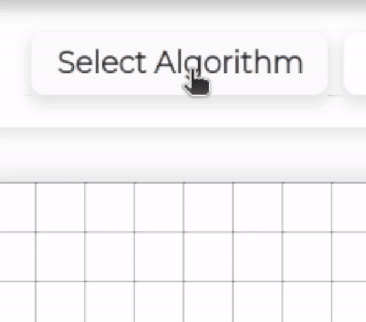
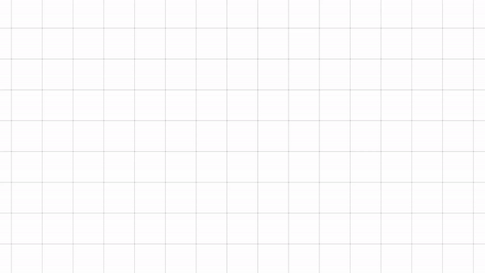
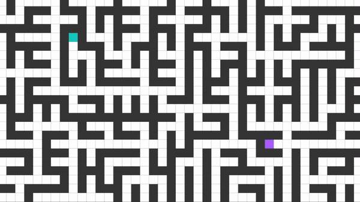

1/5
Welcome!
This is a short tutorial on how to use this visualizer tool.
If you want to get started right away then feel free to click 'Skip'!
If you're interested in seeing the source code, then check out the repo here on GitHub.

2/5
Pick Your Algorithm
Hover over the algorithm dropdown and select the algorithm of your choice.
3/5
Add Nodes
Place your start and end node first and all subsequent nodes will be walls.
4/5
Adjust Customizations
Check out the other available customization options!
- Select Maze - Choose a unique maze to generate to test pathfinding.
- Grid Size - Change grid size from small, medium and large.
- Maze Speed - Change maze generation speed.
- Pathfinding Speed - Change pathfinding exploration speed.
5/5
Start!
Once you have made your customizations, click Generate Maze (if any selected), place your nodes and press Start to watch the algorithm work!
Enjoy!
